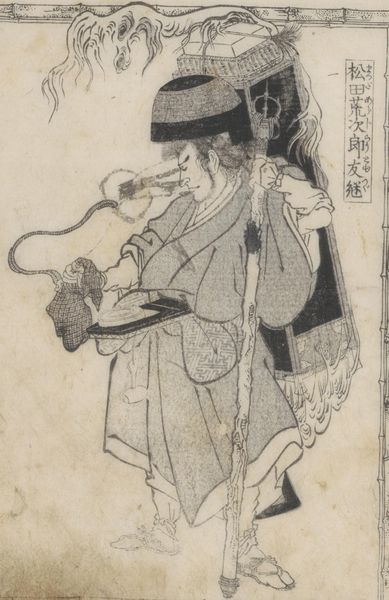

松田荒次郎友継の背負う笈から陰火が出ている。蛇のような顔。荒次郎は僧衣、錫杖と鉦を持っている。
著作者：葛飾隠士吉滿・蹄齋北馬／出典：親書誌：U426_nichibunken_0445：尼城錦／日付：2017／資源識別子：U426_nichibunken_0445_0001_0000
Copyright (c)2010- International Research Center for Japanese Studies, Kyoto, Japan. All rights reserved.